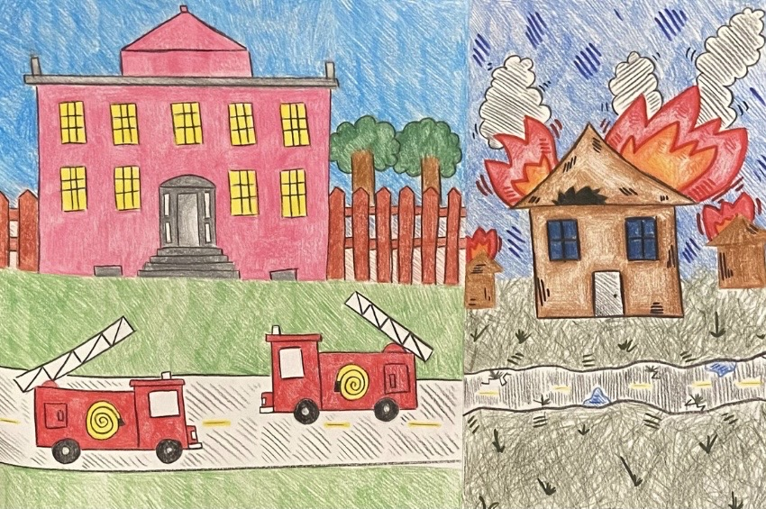
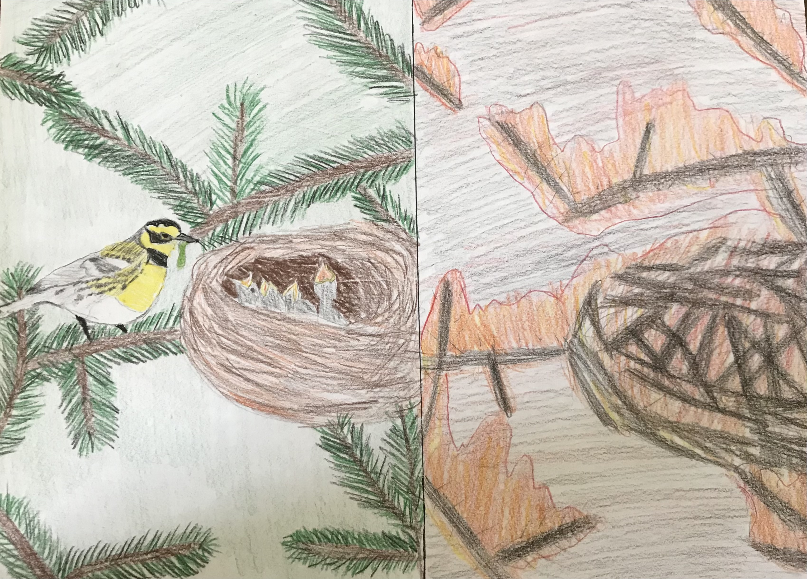
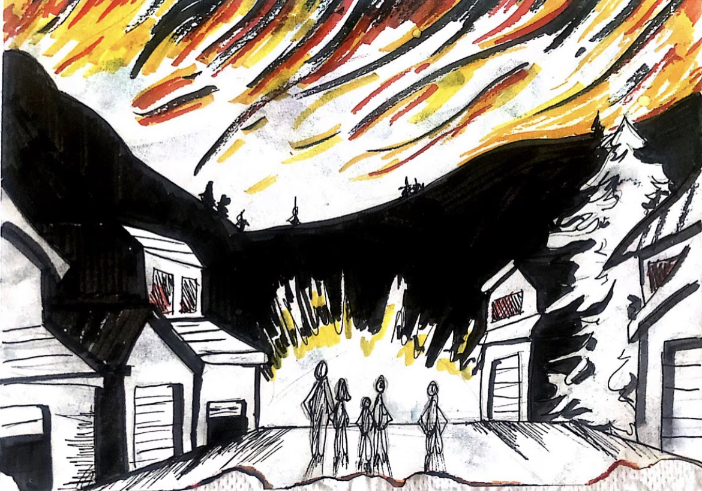
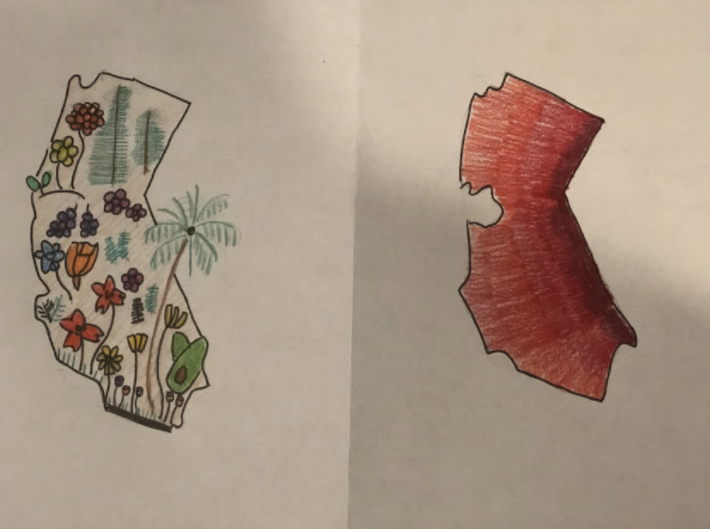
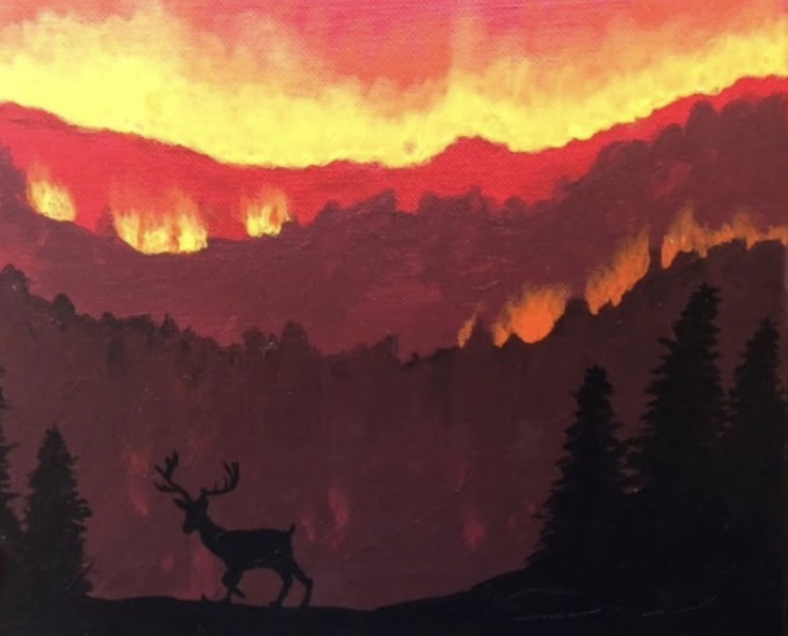
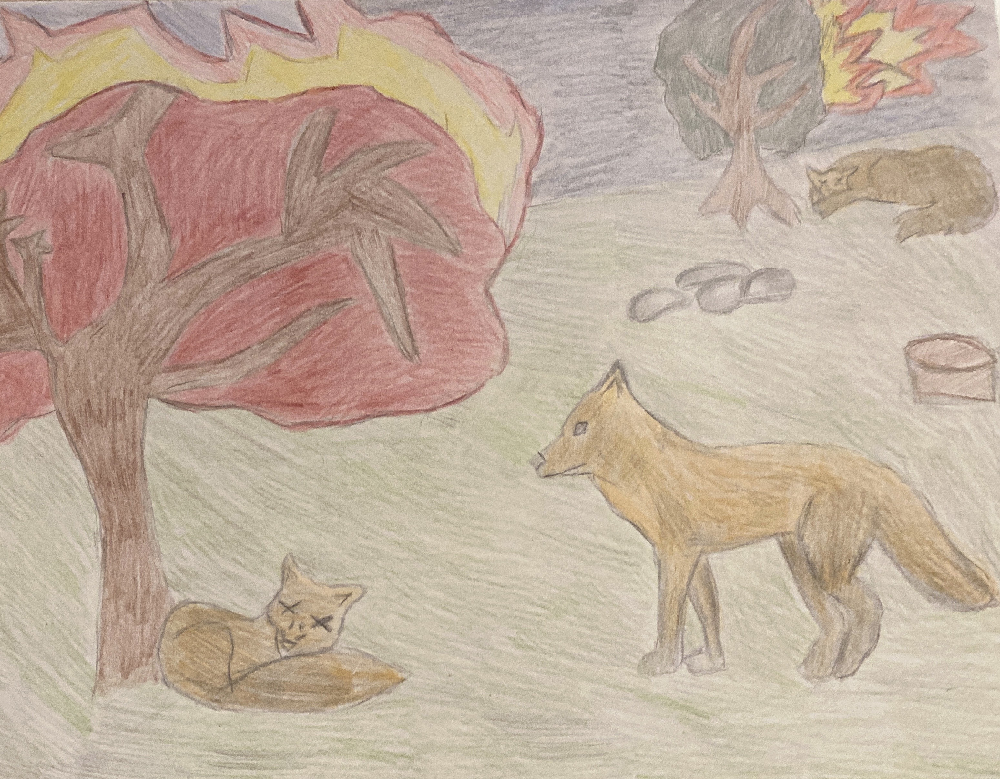
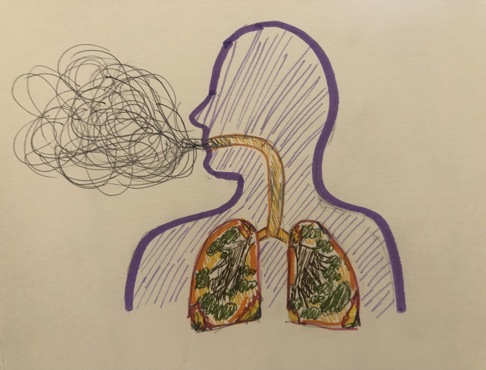

Wildfires Target Low-income Communities |
The California fires are a prime example of the uneven distribution of funds and resources that protect neighborhoods against accidental fires. Wealthy people have the luxury to hire private fire services through their insurance policies to protect their homes and communities. This leaves unequal resources available to low income communities who are forced to rely on volunteers and local, understaffed fire departments. These communities are unable to rebuild in case of a fire as they lack the funds to purchase insurance plans. Low income areas are also more likely to have faulty wiring, as well as lack smoke alarms and sprinklers leading to higher risk of significant damage during a fire. According to Miriam Hernandez at abc7 news, “Structures were twice as likely to be destroyed by wildfire where the median annual income was less than $50,000 a year..” (“Lower Income Areas”). While wealthy neighborhoods are offered an abundance of protection, poorer communities are left unsafe and unprotected when disaster strikes. Ria Singh |
Fires and Habitat Destruction |
Although fire is a natural part of California’s ecosystem, the recent increase in these fires is negatively impacting birds. As the frequency of fires increases, habitats are not able to recover in order to support a stable population. Since birds rely on trees as their homes, they are affected by this habitat destruction more than many other animals. Wildfires force birds that dwell in old-growth forests to find a new home as their’s is ravaged by the uncontrollable fires. Birds such as Pileated Woodpeckers, Townsend’s Warblers, and Golden-crowned Kinglets are displaced and must search for a new home where competition for food will increase. Climate change has increased the frequency of California wildfires to unprecedented numbers and, as a result, has put many bird populations at risk. My artwork depicts this destruction by showing a side-by-side of an unaffected Towsend’s Warbler’s habitat and one that has been damaged by fires. Anushka Vedire |
Mental Health Impacts |
This piece is supposed to show how much the California fires really impacted the everyday lives of an average Californian. The fires not only took many lives and homes away but has caused a huge toll on the mental health of those affected by it. By burning the edges of the paper, it shows how the fire has cornered everyone and truly taken control, making it impossible to escape the mental trauma and scars the fires have placed. Kenzy Sobh |
Environmental Impacts of Wildfires |
The raging destruction and utter force the California Wildfires brought has caused great sadness and sorrow for the thousands of people who have lost their home, the thousands of animals who have lost their habitats and the thousands of tress who have died. California used to be a lush state which was home to thousands of acres of Redwood trees and a diverse plant life, but these wildfires have caused unstable living conditions and large amounts of carbon dioxide emissions that caused many to flee. Through my artwork I hope to show you a little perspective on how large these fires are and how they are not something that can just be ignored. These fires are still being fought and this week the wildfires seem to have moved into a new phase, with cooler temperatures and rain helping firefighters, but also raising the risk of flash floods, which is highly elevated in recently burned areas. Officials warn that fire season is far from over, and the volatile combination of heat and dry lightning could return, leading to new fires and flare-ups. This environmental issue is one that should not be forgot about. Ayana Perera |
Tule Elk |
Tule Elk are one of many types of elk that were effected by the California wildfires. My artwork is a painting that shows the Tule Elk running from the fire that is in the mountains above it. These Elk have experienced a shortage of water due to the wildfires. Activists in California have brought water to these elk to help them survive. ABC 7 news says "Fifty people gathered Sunday at the Tomales Point Reserve, calling for the Park Service to tear down the fence that runs from the bay to the ocean. It keeps the Tule Elk away from the cattle ranches that are allowed to operate on the national park land." These activist are the voices of the elk because they cannot speak for themselves. Many California citizens have spotted lot of dead Tules Elk. I think it is very important to spread awareness to help save the Tules Elk that are native to California. |
Emme MooreFires Affect Mental Health |
In our project, my partner and I wanted to bring light to the mental health issues that the survivors, and especially the firefighters, in California are facing due to the prevalence of wildfires. We did this by starting off with a skit but then the video transitioned into the “news channel” where me and my partner began to discuss the mental health statistics that the firefighters and survivors of these disasters might fall into. For example, we mentioned that after the uproar of fires in 2018, 18 in every 100,000 firefighters in California will take their own lives, and how there has been a 30% increase in PTSD in the survivors of these wildfires. We also made sure to tell our audience to tell a firefighter or survivor of a fire that they are loved, because it truly is something traumatizing to go through. Ella Ferguson and Valentina Perez |
Fires Impact on Foxes |
Throughout the last couple of years California has experienced devastating forest fires that have decimated over 4 million acres of land. 97% of the fires are caused by humans in which many animals have to pay the price. The fox population especially, has undergone a precipitous decline due the careless acts of individuals who start fires. These foxes, known as the Island Foxes are already endangered, and are now on the road to becoming extinct. The unfortunate reality is that the death of one fox leads to the death of the population of foxes which then leads to the death of the community. By taking proper precautions, and using common sense when dealing with fire or anything explosive, it is necessary that we preserve the national forests as well as their innocent inhabitants. Ria Narayanan |
Fires Impact Health |
In the project, I drew how the environmental problems, caused by the California Fires, were effecting the health of the many citizens. Therefore, my drawing shows a citizen in California suffering from effects of the fires as their lungs are burning. This emphasizes the harsh reality that these terrible wildfires can have on the innocent people around them. Nora Rhima |